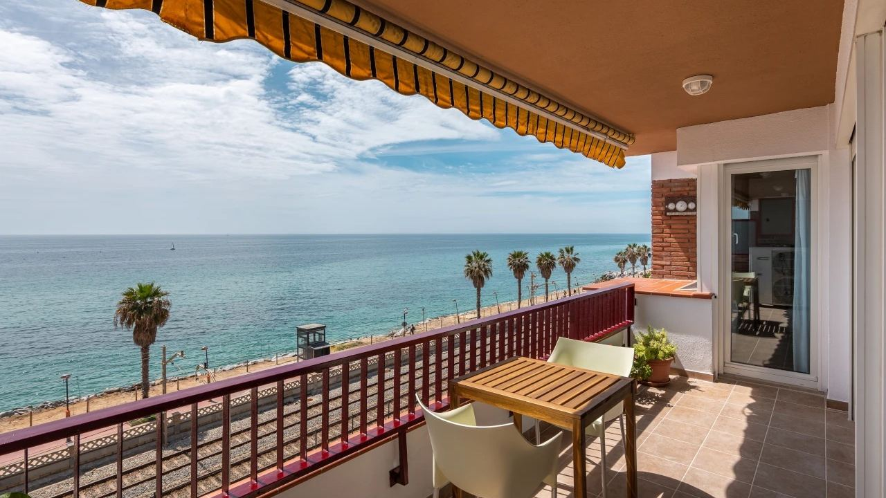
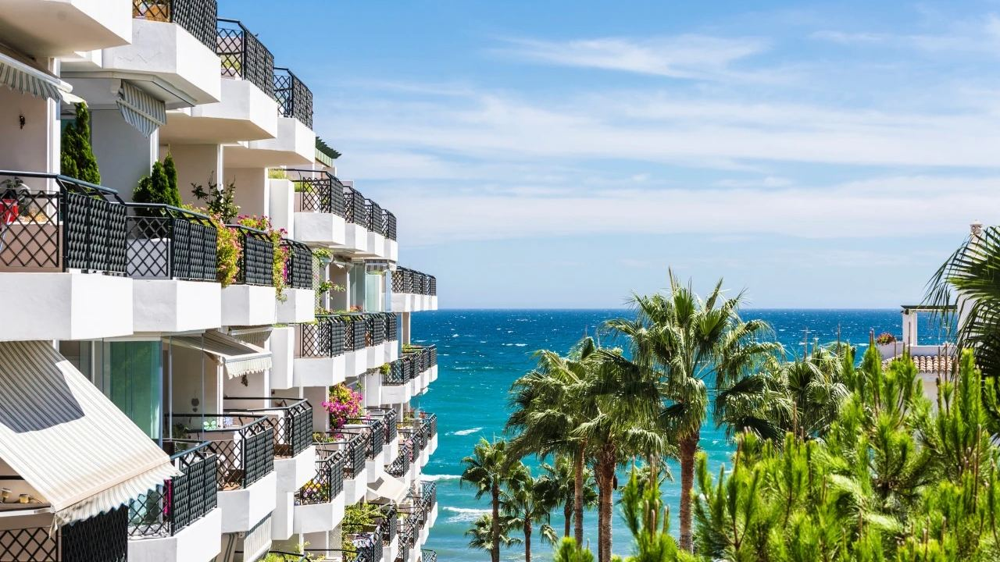
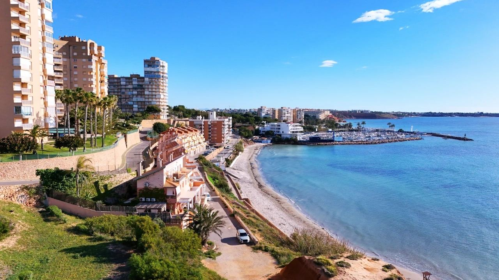
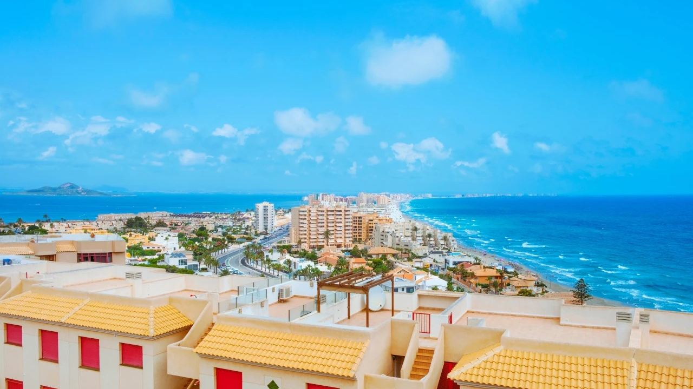
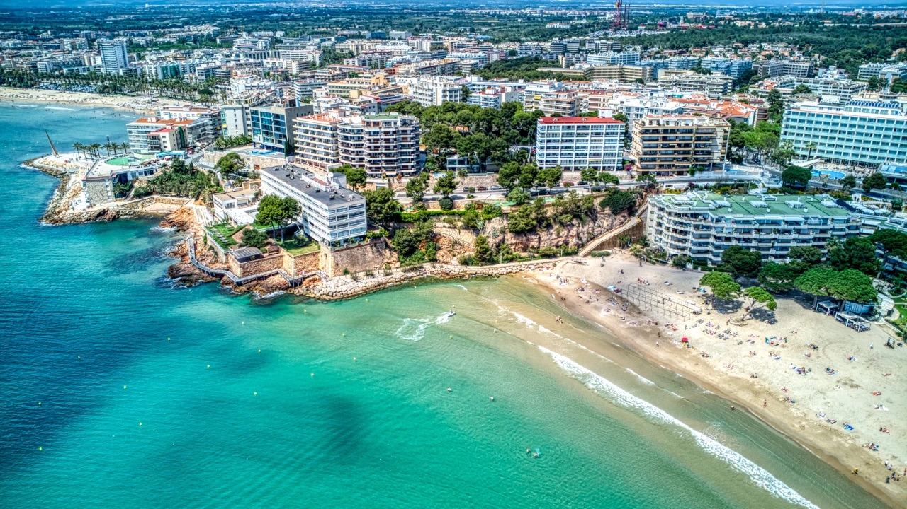

Buying in Spain · Practical
Buying a Property Near the Sea in Spain
 By Lucyna Gacek · · updated · 3 min read
By Lucyna Gacek · · updated · 3 min read

In short: A home by the sea is what most buyers on the Spanish coast want, and it holds its value best because the supply cannot grow. But "near the sea" can mean three different things: frontline (nothing between you and the beach), sea views from higher up, or a short walk to the beach, each with its own price. Close to the shore, the Coastal Act limits what can be built or extended within 100 metres of the sea, so check the property's status before you buy. Also look at the flood map, the building's upkeep against salt air, and summer noise and parking.
Waking up to the sound of the waves is the reason many of our clients buy in Spain. Here is how to choose the right kind of seaside home, the rules that apply close to the shore, and where to look on the Costa Blanca and Costa del Sol.
Frontline, sea view or walking distance?

| Type | What it means | Good to know |
|---|---|---|
| Frontline (primera línea) | Only the beach or promenade between you and the sea | Highest price and demand; check if a road runs in between |
| Sea view | Open view from a higher floor or a hillside | Often better value; check the view cannot be built over |
| Walking distance | Beach within about 5–10 minutes on foot | Most choice and lower prices; easy to let |
Frontline homes usually rise most in value and let most easily, but walking-distance homes often give the best balance of price, space and quiet.
The Coastal Act: what you can build near the shore

Spain's Coastal Act (Ley de Costas) protects the shoreline. In short:
- The beach and the strip closest to the sea are public land; nobody can own them.
- A protection zone runs 100 metres inland (20 metres in areas that were already urban in 1988). New homes are not allowed there, and existing ones can be repaired and modernised but not enlarged.
- A 6-metre access strip next to the shore must stay open to the public.
Most apartments in established resorts are not affected, but for frontline villas and older houses ask your lawyer to check the Coastal Act status and any limits on renovation before you sign. See how to buy in Spain.
Other checks for a seaside home
- Flood risk: look the address up on the national flood map (SNCZI), especially for ground floors and homes near riverbeds (ramblas). Floods are covered by the state insurance pool through your home insurance.
- Salt air: it wears railings, window frames, air-conditioning units and paintwork faster. Ask about recent works and check the community's reserve fund.
- Humidity: ground-floor and north-facing homes near the sea can suffer from damp; look for marks and ask how the home is ventilated in winter.
- Summer life: beach towns get busy in July and August. Visit in high season and in winter, and check parking.
- Orientation: a south or east-facing terrace gets the winter sun and the morning light over the sea.
Where to look

Costa del Sol: Marbella's Golden Mile and Puerto Banús for frontline luxury, Estepona for its old town and new beachfront developments, and the hills of Benahavís for villas with sea views. The coast is more international and lively all year.
Northern Costa Blanca: Jávea and Moraira for coves and low-rise villas, Altea and Altea Hills for art, views and character, Calpe for apartments beneath the Peñón de Ifach. Quieter, greener and less built up.
Southern Costa Blanca: Alicante city, Torrevieja and Orihuela Costa for long sandy beaches and the most affordable seaside apartments.
Compare the two coasts in more detail in Costa Blanca or Costa del Sol? and see current property prices.
Frequently asked questions
What does frontline mean in Spain?
Primera línea means that only the beach or the promenade lies between the property and the sea. Some listings also use it when a road runs in between, so check on the map.
Can I renovate a house right on the beach?
Within the Coastal Act's 100-metre protection zone, existing homes can be repaired and modernised but not enlarged, and new homes are not allowed. A lawyer should check the status before you buy.
Is a sea-view property a good investment?
Generally yes. Sea views and frontline positions are limited in supply, so they hold their value well and are the easiest to let.
How do I check flood risk?
Look the address up on the national flood zone map (SNCZI) and ask the community about past floods, especially for ground floors.
Where are the cheapest seaside apartments?
On the southern Costa Blanca, around Torrevieja and Orihuela Costa.
Find your home by the sea

We know both coasts well and can check the Coastal Act status, flood risk and building condition before you commit. Contact us for a shortlist of seaside homes.
Sources: BOE – Coastal Act (Ley 22/1988 de Costas) · MITECO – National flood zone map (SNCZI)